信息一项不删金额、编号、关系状态、OCR、模型、文件信息和维护结果全部保留。
视觉重量降低去纸纹、衬线与印章感，使用晨雾底、白色内容组和潮汐青主操作。
性能边界不变不增加实时模糊、shader 或常驻动画，固定行高与分页架构继续沿用。
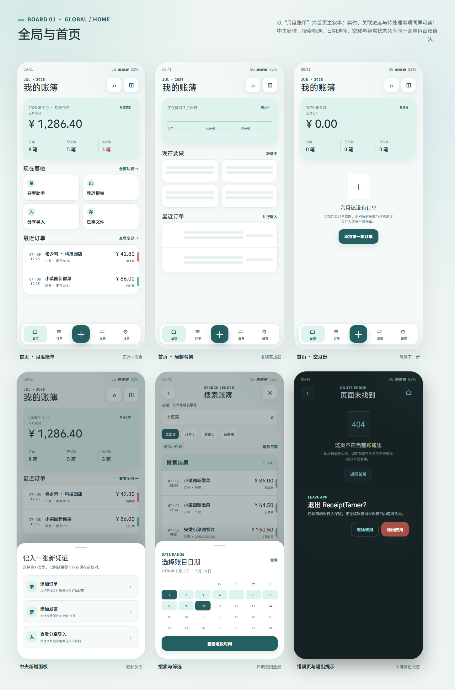
10 张完整画板
01 · 全局与首页
查看源稿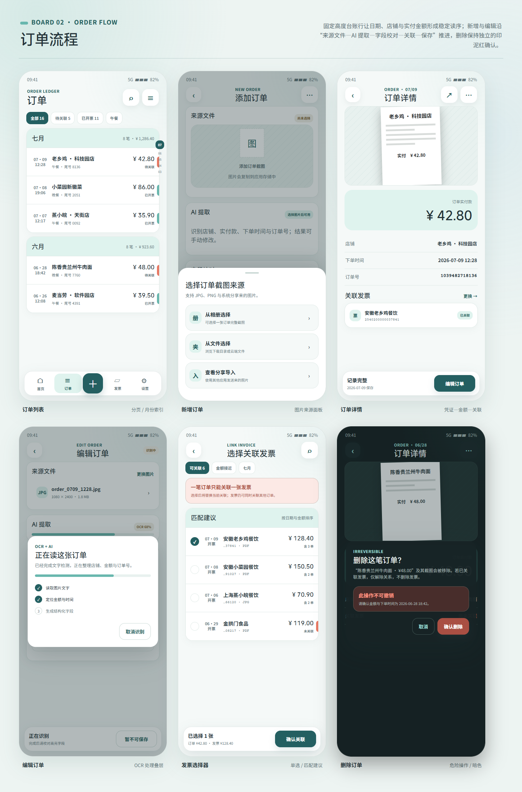
02 · 订单流程
查看源稿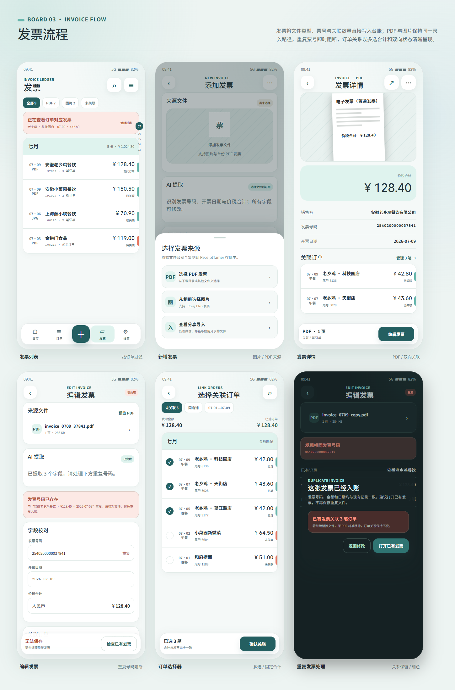
03 · 发票流程
查看源稿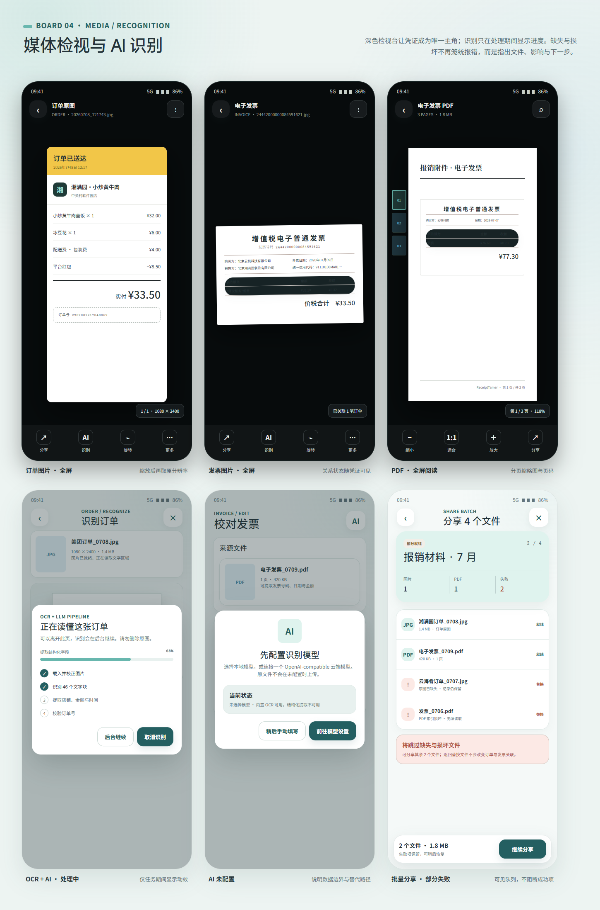
04 · 媒体与识别
查看源稿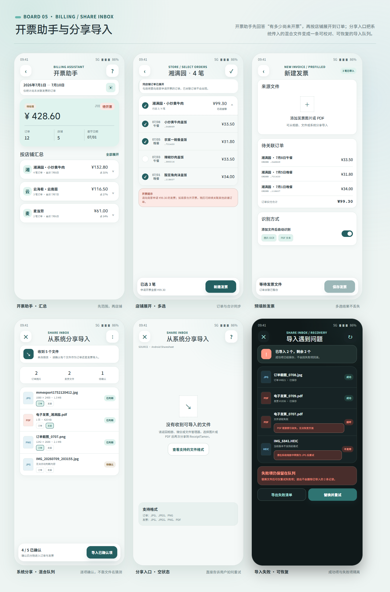
05 · 开票与分享
查看源稿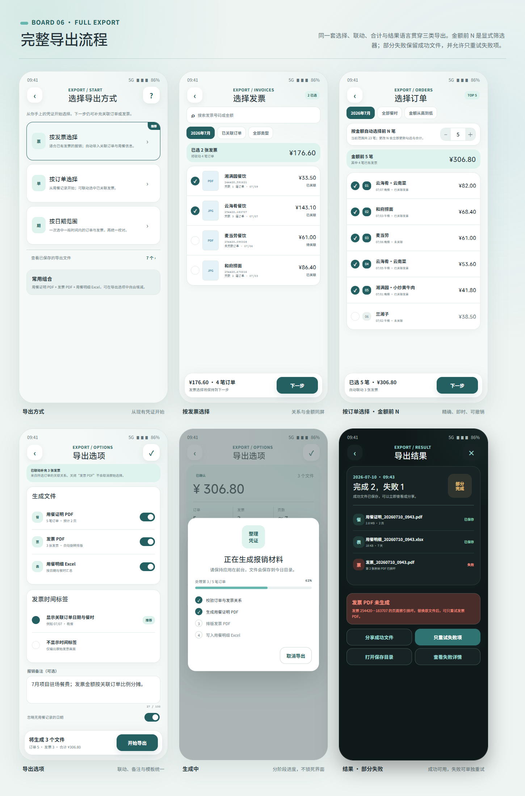
06 · 完整导出
查看源稿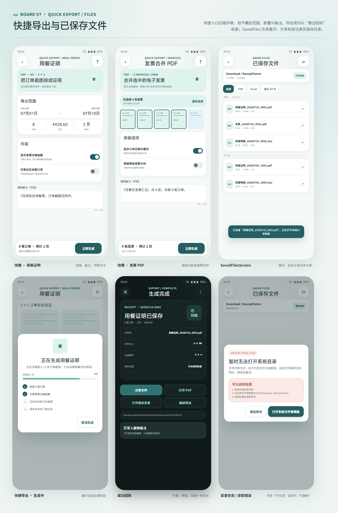
07 · 快捷导出
查看源稿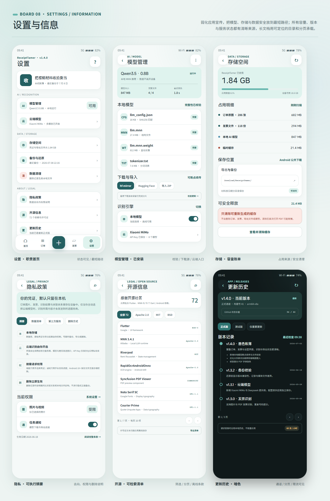
08 · 设置与信息
查看源稿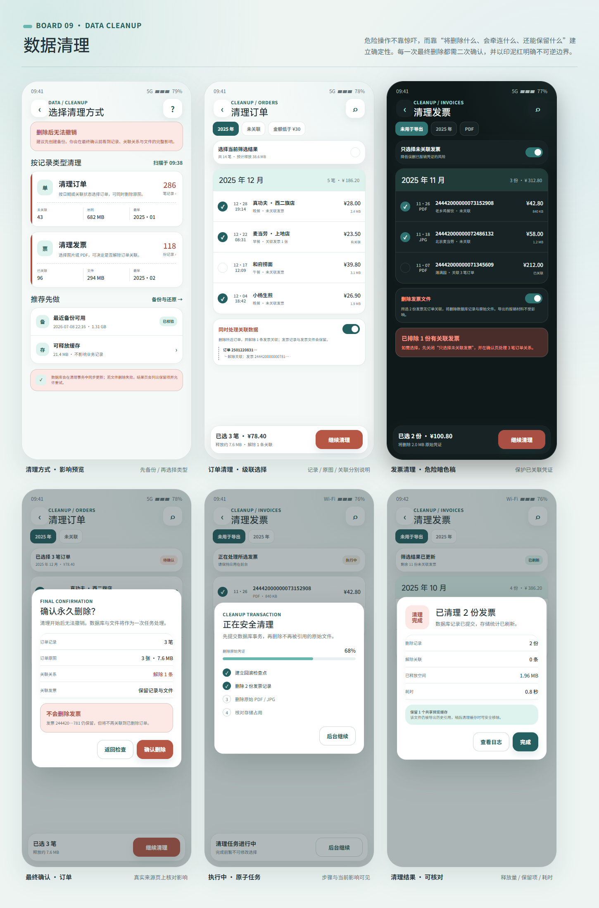
09 · 数据清理
查看源稿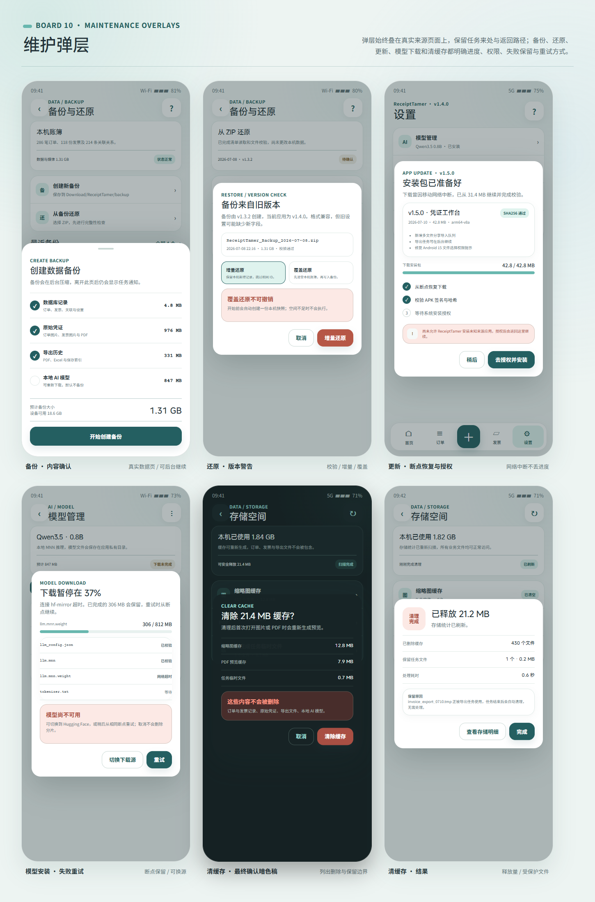
10 · 维护弹层
查看源稿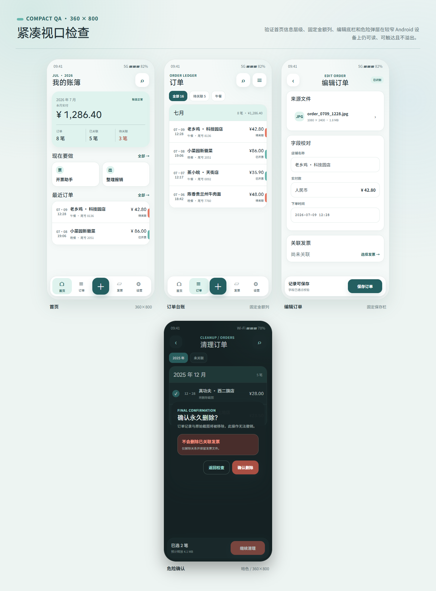